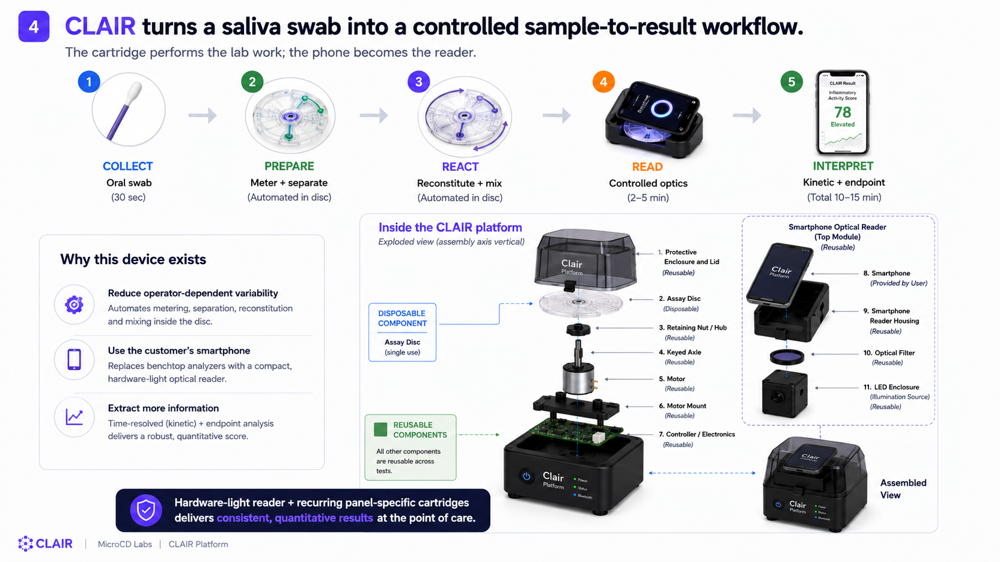
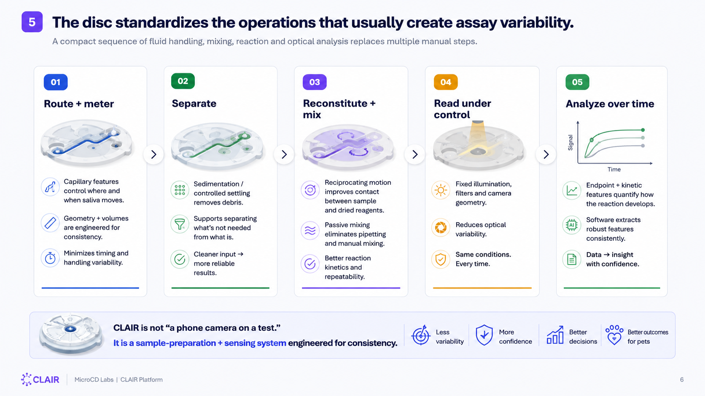

Flagship platformIn development
CLAIR by MicroCD Labs
Making saliva more reliable for quantitative point-of-care research.
CLAIR combines a disposable centrifugal assay disc with controlled smartphone imaging to reduce variability across sample preparation, assay timing, and readout.
Concept platform in development. Not for sale or clinical use. Performance has not been established.
The problem
Saliva is simple to collect. Quantitative measurement is not.
Dilution, debris, viscosity, manual transfer, timing, and phone position can all change the result. CLAIR is being developed to control those variables in one cartridge-led workflow.
The system
The disc prepares. The reader standardizes. The assay informs.
One defined path connects oral collection, centrifugal processing, controlled imaging, and structured interpretation.

Initial focus
Canine oral-health decision-support research.
The planned first panel studies candidate signals related to inflammation, tissue activity, oral chemistry, and bleeding. It is intended to support research into when a more comprehensive veterinary dental workup may be appropriate.
Candidate markers, thresholds, analytical performance, and clinical interpretation require validation.
Review the CLAIR development planEngineering capabilities
The disciplines behind CLAIR are available to selected development programs.
Microfluidic architecture, lab-on-disc workflows, diagnostic cartridges, contract CAD, prototype coordination, verification planning, and technical consulting are scoped around a defined deliverable.

Research foundation
Extract more information from how an assay develops over time.
Our announced preprint examines kinetic signal extraction, region-of-interest analysis, and endpoint-versus-rate comparison for capillary diagnostic assays.
Collaboration
Help build the next body of CLAIR evidence.
MicroCD Labs welcomes non-confidential discussions with veterinary clinics, assay specialists, cartridge manufacturers, and aligned investors.